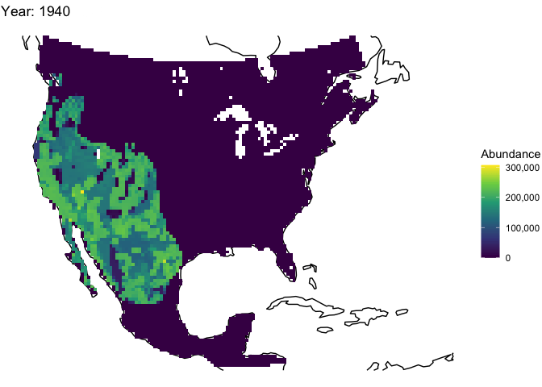

parallel_cores <- 1
nsims <- 1
burn_in_steps <- 5
timesteps <- 54 + burn_in_steps
random_seed <- 72
results_dir <- "~/Documents/mgsim/Data/Output/epizootic_test"First MG/HM Simulation
Finch-only simulation
Goal
To produce one functional simulation of the house finch system from 1940 to 1993. I’m aware this is a lofty goal. It’ll have to go by parts.
Input Data
Model Settings
There are some overall model settings that need to be decided upon.
Region
region <- data_dir %>% file.path("finch_region.qs") %>% qread()Spatial Autocorrelation
This object calculates spatial autocorrelation among cells. This is useful for dispersal and carrying capacity calculations.
env_corr <- SpatialCorrelation$new(region = region,
amplitude = 0.99,
breadth = 850,
distance_scale = 1000)
env_corr$calculate_compact_decomposition(decimals = 4)Breeding Season Length
burn_in <- stack(replicate(burn_in_steps, raster(
file.path(data_dir, "breeding_season_length.tif"), layer = 1
)))
bsl_raster <- data_dir %>%
file.path("breeding_season_length.tif") %>%
stack(bands = 1:54) %>%
stack(burn_in, .) |>
mask(region$region_raster) |>
calc(fun = round)Model Template
This object stores fixed parameters for the model (ones that are not sampled via Latin hypercube sampling.)
model_template <- DiseaseModel$new(
simulation_function = "disease_simulator",
region = region,
time_steps = timesteps,
populations = region$region_cells,
replicates = 1,
stages = 2,
compartments = 4,
seasons = 2,
mortality_unit = list(c(1, 1, 0, 0, 1, 1, 0, 0),
c(1, 1, 0, 0, 1, 1, 0, 0)),
fecundity_unit = rep(1, 8),
fecundity_mask = rep(c(0, 1), 4),
transmission = rep(0, 4), # because this is pre-outbreak
transmission_unit = rep(0, 4),
transmission_mask = c(1, 1, 0, 0, 1, 1, 0, 0),
recovery = rep(0, 4), # pre-outbreak
recovery_unit = rep(0, 4),
recovery_mask = c(0, 0, 1, 1, 0, 0, 1, 1),
breeding_season_length = bsl_raster,
simulation_order = list(c("transition", "season_functions", "results"),
c("dispersal", "season_functions", "results")),
results_selection = c("abundance"),
results_breakdown = "stages",
season_functions = list(siri_model_summer, siri_model_winter),
hs_file = "habitat_suitability_v2",
mask_file = "native_range_mask",
verbose = FALSE,
# I will need to modify this for the next simulation phase
attribute_aliases = list(
mortality_Sj_summer = "mortality$summer$a",
mortality_Sa_summer = "mortality$summer$b",
mortality_I1j_summer = "mortality$summer$c",
mortality_I1a_summer = "mortality$summer$d",
mortality_Rj_summer = "mortality$summer$e",
mortality_Ra_summer = "mortality$summer$f",
mortality_I2j_summer = "mortality$summer$g",
mortality_I2a_summer = "mortality$summer$h",
mortality_Sj_winter = "mortality$winter$a",
mortality_Sa_winter = "mortality$winter$b",
mortality_I1j_winter = "mortality$winter$c",
mortality_I1a_winter = "mortality$winter$d",
mortality_Rj_winter = "mortality$winter$e",
mortality_Ra_winter = "mortality$winter$f",
mortality_I2j_winter = "mortality$winter$g",
mortality_I2a_winter = "mortality$winter$h",
dispersal1 = "dispersal$a",
dispersal2 = "dispersal$b"
)
)Carrying Capacity and Initial Abundance
This object is a generator. This means that it generates complex outputs (in this case, a matrix of carrying capacity throughout the simulation and a matrix of initial abundance) based on simple inputs (in this case, maximum population density and number of finches released on Jones Beach.)
capacity_gen <- Generator$new(
description = "capacity",
region = region,
generate_rasters = FALSE,
# use but don't generate
burn_in_steps = burn_in_steps,
time_steps = timesteps,
generative_requirements = list(
hs_raster = "file",
mask_raster = "file",
initial_abundance = "function",
carrying_capacity = "function"
),
inputs = c("density_max", "hs_file", "mask_file", "initial_release"),
outputs = c("initial_abundance", "carrying_capacity")
)
# Here we tell the generator to import the HS file and save it as "hs_matrix"
capacity_gen$add_file_template(
param = "hs_raster",
path_template = file.path(data_dir, "%s.tif"),
path_params = "hs_file",
file_type = "tif"
)
capacity_gen$add_file_template(
param = "mask_raster",
path_template = file.path(data_dir, "%s.tif"),
path_params = "mask_file",
file_type = "tif"
)
# Here we subset the hs_matrix to have only the region cells, and we add the burn in
# Also, we tell the generator to generate the carrying_capacity based on "density_max" and "hs_matrix".
capacity_gen$add_function_template(
param = "carrying_capacity",
function_def = function(params) {
hs_matrix <- params$hs_raster %>% as.matrix() %>%
.[params$region$region_indices, 1:(params$time_steps - params$burn_in_steps)]
hs_matrix[!is.finite(hs_matrix)] <- 0
# repeat the first timestep n times as burn in
hs_matrix <- cbind(replicate(params$burn_in_steps, hs_matrix[, 1]), hs_matrix)
# round the density values
round(params$density_max * hs_matrix)
},
call_params = c("density_max", "hs_raster", "burn_in_steps", "region",
"time_steps")
)
# Here we tell the generator what function to use to generate initial_abundance
# based on the carrying capacity of the first time step, the native range, and
# the number of finches released in Jones Beach, NY.
capacity_gen$add_function_template(
param = "initial_abundance",
function_def = function(params) {
hs_matrix <- params$hs_raster %>%
raster::mask(params$mask_raster) %>%
as.matrix() %>%
.[params$region$region_indices, ] %>%
identity()
hs_matrix[!is.finite(hs_matrix)] <- 0
hs_vector <- hs_matrix[, 1]
hs_vector <- round(params$density_max * hs_vector)
hs_vector[3009] <- params$initial_release
initial_matrix <- matrix(0, nrow = 8, ncol = 6355)
initial_matrix[2, ] <- hs_vector
return(initial_matrix)
},
call_params = c("hs_raster", "mask_raster", "density_max", "initial_release", "region")
)
system.time({
test_capacity <- capacity_gen$generate(input_values = list(density_max = 186000,
initial_release = 50,
hs_file = "habitat_suitability_v1",
mask_file = "native_range_mask"))
}) user system elapsed
0.756 0.138 0.895 raster::plot(
region$raster_from_values(test_capacity[[1]][2,]),
main = "Initial abundance",
colNA = "blue"
)
Dispersal
This generator can take input abundances and shift them around according to dispersal rules.
b_lookup <- data.frame(d_max = -Inf, b = 0:904)
for (i in 2:904) {
b_lookup$d_max[i] <- which.max(exp(-1*(1:1501)/b_lookup$b[i]) <= 0.19)
}
b_lookup$d_max[905] <- 1501
# distance_matrix <- dispersal_gen$calculate_distance_matrix()
# dispersal_gen$calculate_distance_data(distance_matrix = distance_matrix)
# these are pre-calculated because they're computationally intensive
distance_data <- qread(file.path(data_dir, "dispersal_distance_data.qs"))
adult_dispersal_gen <- DispersalGenerator$new(
region = region,
spatial_correlation = env_corr,
distance_classes = seq(10, 1500, 10),
distance_scale = 1000, # km
dispersal_function_data = b_lookup,
inputs = c("dispersal_p_adult",
"dispersal_r_adult"),
attribute_aliases = list(dispersal_r_adult = "dispersal_max_distance",
dispersal_p_adult = "dispersal_proportion",
dispersal_adult = "dispersal_data"),
decimals = 3
)
adult_dispersal_gen$distance_data <- distance_data
juvenile_dispersal_gen <- DispersalGenerator$new(
region = region,
spatial_correlation = env_corr,
distance_classes = seq(10, 1500, 10),
distance_scale = 1000, # km
dispersal_function_data = b_lookup,
decimals = 3,
inputs = c("dispersal_p_juv",
"dispersal_r_juv"),
attribute_aliases = list(dispersal_r_juv = "dispersal_max_distance",
dispersal_p_juv = "dispersal_proportion",
dispersal_source_n_k_cutoff = "dispersal_source_n_k$cutoff",
dispersal_juv = "dispersal_data"),
decimals = 3
)
juvenile_dispersal_gen$distance_data <- distance_data
# Test run
adult_dispersal_data <- adult_dispersal_gen$generate(
input_values = list(
dispersal_p_adult = 0.5,
dispersal_r_adult = 300
)
) |> _$dispersal_data
head(adult_dispersal_data[[1]]) target_pop source_pop emigrant_row immigrant_row dispersal_rate
X2 2 1 1 1 0.029
X5 5 1 2 1 0.029
X6 6 1 3 1 0.026
X7 7 1 4 1 0.021
X8 8 1 5 1 0.017
X9 9 1 6 1 0.013Latin Hypercube Sampling
I am only going to run one test simulation for now. However, I still want to generate a data set sampling all the variable parameters.
lhs_generator <- LatinHypercubeSampler$new()
# Dispersal parameters
lhs_generator$set_beta_parameter("dispersal_p_juv", alpha = 9.834837,
beta = 2.019125)
lhs_generator$set_beta_parameter("dispersal_p_adult", alpha = 1.5685,
beta = 2.365266)
lhs_generator$set_truncnorm_parameter("dispersal_r_juv", lower = 0, upper = 1500,
mean = 725.9071, sd = sqrt(204006.6))
lhs_generator$set_normal_parameter("dispersal_r_adult", mean = 679.4172,
sd = sqrt(18594.59))
lhs_generator$set_uniform_parameter("dispersal_source_n_k_cutoff", lower = 0,
upper = 1)
lhs_generator$set_uniform_parameter("dispersal_source_n_k_threshold", lower = 0,
upper = 1)
lhs_generator$set_uniform_parameter("dispersal_target_n_k_cutoff", lower = 0,
upper = 1)
lhs_generator$set_uniform_parameter("dispersal_target_n_k_threshold", lower = 0,
upper = 1)
# Population growth parameters
lhs_generator$set_uniform_parameter("abundance_threshold", lower = 0, upper = 25, decimals = 0)
lhs_generator$set_uniform_parameter("initial_release", lower = 5, upper = 50, decimals = 0)
lhs_generator$set_uniform_parameter("density_max", lower = 186000, upper = 310000, decimals = 0)
lhs_generator$set_poisson_parameter("fecundity", lambda = 8.509018)
# # Transmission parameters
# lhs_generator$set_uniform_parameter("beta_Sa_winter", lower = 0, upper = 0.07588)
# lhs_generator$set_uniform_parameter("beta_Sa_summer", lower = 0, upper = 0.007784)
# lhs_generator$set_triangular_parameter("Sj_multiplier", lower = 0, upper = 8.5,
# mode = 3)
# lhs_generator$set_beta_parameter("beta_I2_modifier", alpha = 1.547023,
# beta = 0.4239236)
# Mortality parameters
lhs_generator$set_beta_parameter("mortality_Sj_winter", alpha = 3.962104,
beta = 2.228683)
lhs_generator$set_beta_parameter("mortality_Sa_winter", alpha = 21.89136,
beta = 19.59278)
lhs_generator$set_beta_parameter("mortality_Sj_summer", alpha = 14.51403,
beta = 21.53632)
lhs_generator$set_beta_parameter("mortality_I1j_summer", alpha = 2.756404,
beta = 62.47181)
lhs_generator$set_beta_parameter("mortality_I1j_winter", alpha = 2.756404,
beta = 62.47181)
lhs_generator$set_beta_parameter("mortality_I1a_summer", alpha = 1.771183,
beta = 27.19457)
lhs_generator$set_beta_parameter("mortality_I1a_winter", alpha = 1.678424,
beta = 41.15975)
lhs_generator$set_beta_parameter("mortality_I2_modifier", alpha = 1.033367,
beta = 3.505319)
# # Recovery parameters
# lhs_generator$set_beta_parameter("recovery_I1", alpha = 9.347533,
# beta = 620.1732)
# lhs_generator$set_beta_parameter("recovery_I2", alpha = 1.181112,
# beta = 29.18489)
sample_data <- lhs_generator$generate_samples(number = nsims,
random_seed = random_seed) |>
mutate(sample = 1:nsims, mortality_Sa_summer = 0,
mortality_I2j_summer = mortality_I2_modifier * mortality_I1j_summer,
mortality_I2j_winter = mortality_I2_modifier * mortality_I1j_winter,
mortality_I2a_winter = mortality_I2_modifier * mortality_I1a_winter,
mortality_I2a_summer = mortality_I2_modifier * mortality_I1a_summer,
mortality_Rj_summer = mortality_Sj_summer,
mortality_Ra_summer = mortality_Sa_summer,
mortality_Rj_winter = mortality_Sj_winter,
mortality_Ra_winter = mortality_Sa_winter)Simulation
To do this, I will create a R6 object that handles the logistics of simulation, passing sample data and generator outputs as appropriate to the simulation function, parallelizing, and writing results to disk.
handler <- SimulationHandler$new(
sample_data = sample_data,
model_template = model_template,
generators = list(juvenile_dispersal_gen,
adult_dispersal_gen,
capacity_gen),
parallel_cores = parallel_cores,
results_dir = results_dir
)
handler$run()$summary
[1] "1 of 1 sample models ran and saved results successfully"
$failed_indices
integer(0)
$warning_indices
NULL
$full_log
$full_log[[1]]
$full_log[[1]]$successful
[1] TRUE
$full_log[[1]]$message
[1] "Model sample 1 simulation ran successfully and the results were saved"Visualization
Let’s look at the outcome of this simulation.
basemap <- rnaturalearth::ne_coastline() |>
st_transform(crs(region$region_raster)) |>
st_crop(st_bbox(region$region_raster))Warning: attribute variables are assumed to be spatially constant throughout
all geometriessource(here::here("Scripts/animate_sim.R"))
animate_sim(file.path(results_dir, "sample_1_results.qs"),
region, 3, 1940:1993)